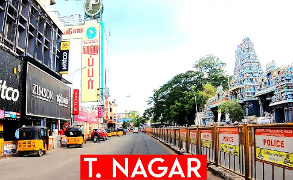

|

|
- T. Nagar (Thyagaraya Nagar) is one of the most bustling and iconic neighborhoods in Chennai, renowned for its vibrant culture, historical significance, and bustling markets. Located in the heart of the city, T. Nagar is a hub of commerce and activity, attracting both locals and visitors alike. The area is primarily known for its thriving shopping district, where a wide array of stores sell everything from traditional Indian textiles, jewelry, and handicrafts to modern clothing and electronics. The famous Ranganathan Street is the epicenter of T. Nagar shopping scene, with its narrow lanes packed with shops and street vendors offering products at competitive prices.
- In addition to its commercial appeal, T. Nagar has deep cultural roots. The area is also known for its vibrant celebration of festivals, especially during Tamil New Year, Pongal, and Deepavali, when the streets come alive with lights, decorations, and traditional events. T. Nagars rich cultural atmosphere is complemented by its proximity to important landmarks like the Kodambakkam and Mambalam neighborhoods, further enhancing its role as a cultural and commercial epicenter of Chennai.
- Over the years, T. Nagar has transformed into a dynamic and cosmopolitan neighborhood, blending its historical charm with the modern demands of urbanization. While the area is often associated with its shopping frenzy, it also offers a variety of other services, including healthcare, education, and dining. The diversity and energy of T. Nagar make it an exciting and essential part of Chennai, with something for everyone, whether they are looking for a glimpse of tradition or the latest trends.
|